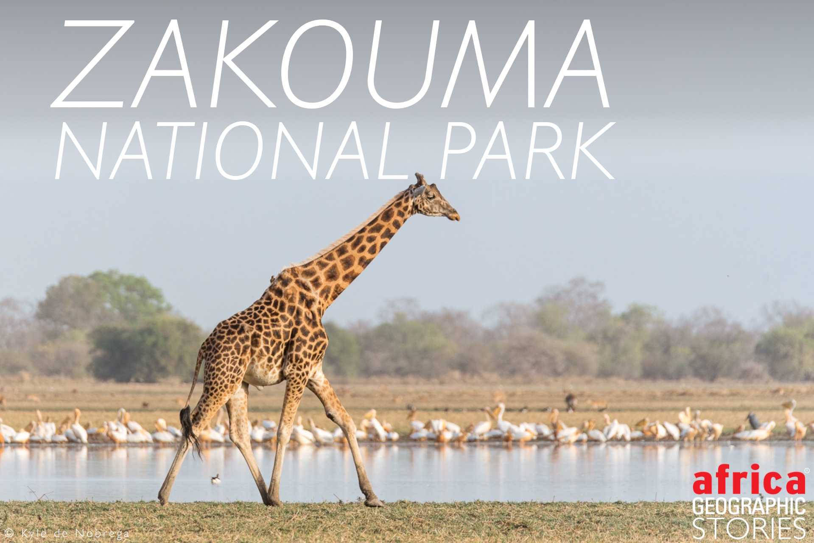
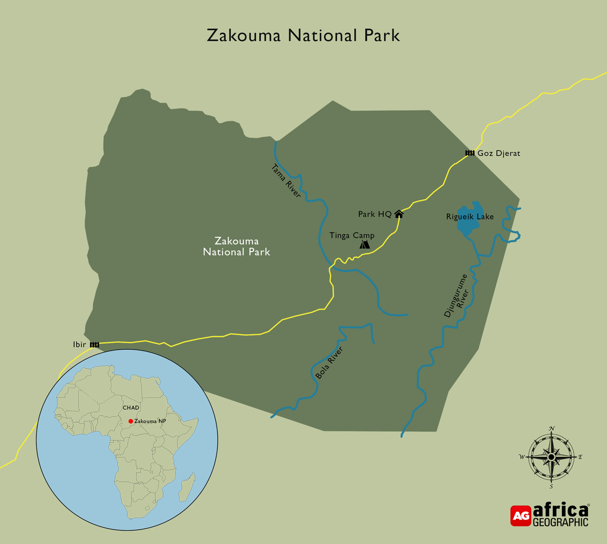
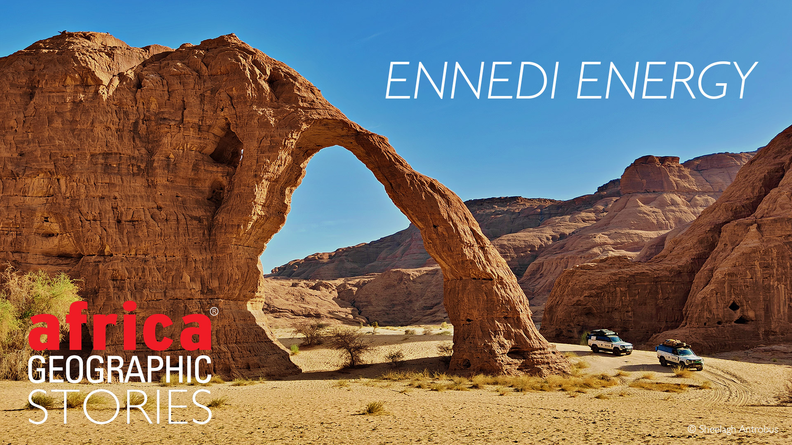
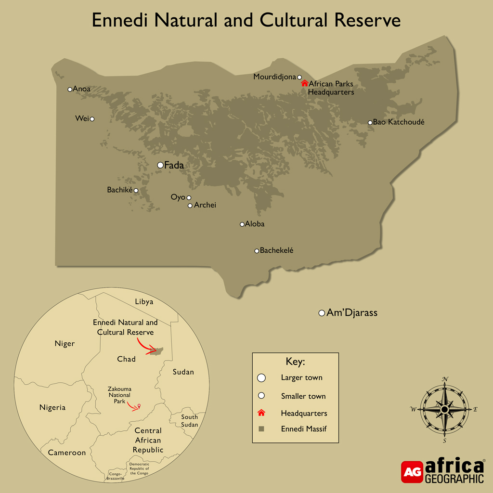
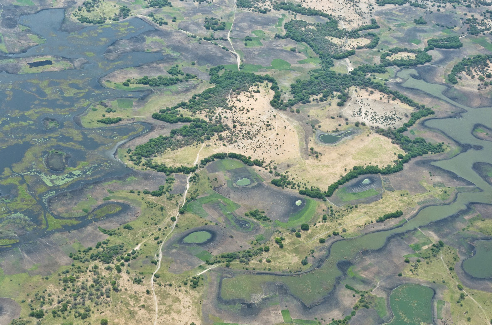

Explore Destinations in Chad
Here are some of the most famous places to visit in Chad:
Zakouma National Park
Zakouma National Park is one of Africa’s most recent examples of
a park pulled from the brink that has rapidly returned to a vibrant and
spectacular wilderness teeming with life and bursting with biodiversity.
Africa’s remaining intact ecosystems are a marvel of circumstance, both ancient and modern,
wild and human. They are often described as fragile - a label undoubtedly apt but overly simple.
For although the survival ofthe continent’s wild spaces is never certain,
they are fragile in the way that new leaves of a sapling are fragile. Given a chance,
with the right resources and protection, history has proved nature to be remarkably resilient.

Located in southeastern Chad, Zakouma National Park is one of the country's premier wildlife destinations.
The park is home to a diverse range of animals, including elephants, lions, giraffes, and numerous bird species.
Visitors can embark on guided safari tours to explore the park's rich biodiversity and stunning landscapes.



Ennedi Desert
Ennedi Desert is a stunning and remote region located in northeastern Chad, known for its unique rock formations, ancient rock art, and rich cultural heritage.
The Ennedi Massif is a UNESCO World Heritage site, recognized for its exceptional natural beauty and archaeological significance.
The desert is characterized by towering sandstone cliffs, deep canyons, and natural arches, creating a surreal landscape that attracts adventurers and nature enthusiasts.
Visitors to the Ennedi Desert can explore the rock art sites, which feature thousands of petroglyphs and paintings dating back thousands of years, providing insights into the region's prehistoric inhabitants.
The desert is also home to diverse wildlife, including Barbary sheep, desert foxes, and various bird species.
Due to its remote location and challenging terrain, visiting the Ennedi Desert often requires guided tours and careful planning.
However, those who make the journey are rewarded with breathtaking scenery and a glimpse into the ancient history of this remarkable desert region.

The Ennedi Desert is located in northeastern Chad and is part of the larger Sahara Desert. It is situated within the Ennedi Massif, a mountainous region known for its unique rock formations and stunning landscapes. The desert is characterized by towering sandstone cliffs, deep canyons, and natural arches that create a surreal and picturesque environment.



Lake Chad
Lake Chad is a large, shallow lake located in the Sahel region of Africa, bordered by Chad, Cameroon, Niger, and Nigeria. It is one of the largest lakes in Africa and has historically been a vital water source for millions of people living in the surrounding arid and semi-arid regions.
The lake is known for its fluctuating size, which has varied significantly over the years due to factors such as climate change, droughts, and human activities. At its peak, Lake Chad covered an area of approximately 25,000 square kilometers, but it has shrunk to less than 1,500 square kilometers in recent decades.
Despite its shrinking size, Lake Chad remains an important ecological and economic resource. It supports a diverse range of wildlife, including fish species that are crucial for local fisheries. The lake also provides water for agriculture and livestock, making it essential for the livelihoods of many communities in the region.
Efforts are being made to address the challenges facing Lake Chad, including initiatives to promote sustainable water management and conservation practices. The lake's future remains uncertain, but it continues to be a symbol of resilience and adaptation in the face of environmental changes.

Lake Chad is located in the Sahel region of Africa and is bordered by four countries: Chad to the east, Cameroon to the southwest, Niger to the northwest, and Nigeria to the south. The lake is situated in a semi-arid region characterized by dry conditions and seasonal rainfall. It is fed by several rivers, including the Chari and Logone rivers, which flow into the lake from the south.


Some information:
| Destination | Location | Best Time to Visit | Highlights |
|---|---|---|---|
| Zakouma National Park | Southeastern Chad | December - April | Wildlife safaris, elephants, lions, birdwatching |
| Lake Chad | Western Chad (border area) | November - February | Fishing villages, boat rides, birdlife |
| Ennedi Desert | Northeastern Chad | October - March | Sandstone arches, caves, rock art |
| N'Djamena | Southwest Chad (Capital) | All year round | Markets, mosques, cultural museums |